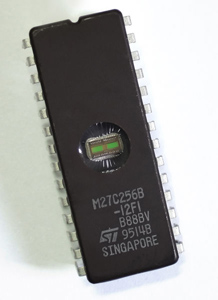

EPROM

Η μνήμη EPROM (Erasble PROMs - Διαγράψιμη PROM) είναι η εξέλιξη της απλής PROM. Το χαρακτηριστικό των EPROMs είναι,
ότι μπορούν να προγραμματιστούν πολλές φορές, διατηρώντας πάντα τα χαρακτηριστικά μιας PROM. Έτσι, όταν το κρυσταλλικό
πλαίσιο μιας EPROM εκτίθεται σε ισχυρή υπεριώδη ακτινοβολία για 15 λεπτά περίπου, όλα τα bits που περιέχει γίνονται
ίσα με "1". Στη συνέχεια, μπορούν να γραφτούν πληροφορίες σε αυτές με τη βοήθεια ενός προγραμματιστή PROM. Οι EPROMs
είναι πολύ φθηνότερες από τις PROMs γιατί μπορούν να ξαναχρησιμοποιηθούν. Οι EPROMs κατά κάποιο τρόπο μοιάζουν με τα
CD-RW, αφού μπορούμε να σβήσουμε τα περιεχόμενά τους και να γράψουμε νέες πληροφορίες.